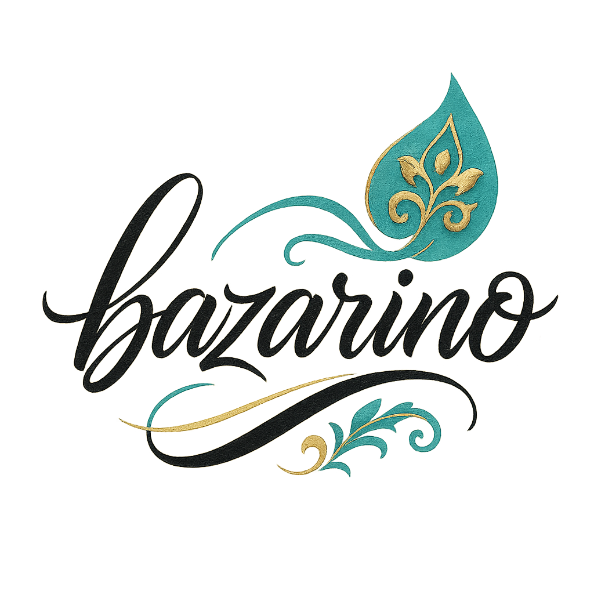

بازارینو ربات تلگرامی هوشمندیست که برای ایرانیان ساکن ایتالیا ساخته شده تا بتوانند محصولات اصیل ایرانی از جمله برنج، خشکبار، ادویه، نوشیدنی و کنسرو را به سادگی از طریق تلگرام سفارش دهند و در شهر پروجا یا سراسر ایتالیا تحویل بگیرند.
شعار ما: اصالت ایرانی، راحتی ایتالیایی IRIT
ورود به ربات تلگرامی
آب حیات نامدهای زان لب شیرین هنوز
در دل من مانده از آن لعل شکرخا خاطری
در دل من مانده از آن لعل شکرخا خاطری
Non ho ancora bevuto l'acqua della vita da quelle labbra dolci,
ma il ricordo del tuo sorriso zuccherato vive ancora nel mio cuore.
ma il ricordo del tuo sorriso zuccherato vive ancora nel mio cuore.
